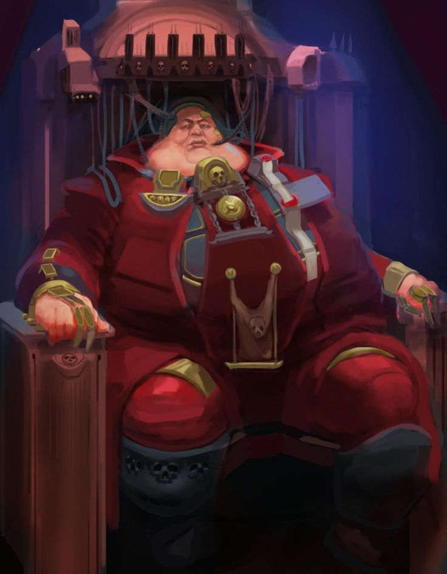
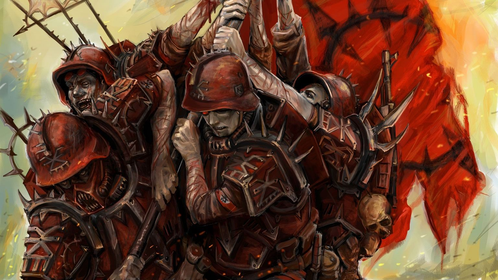
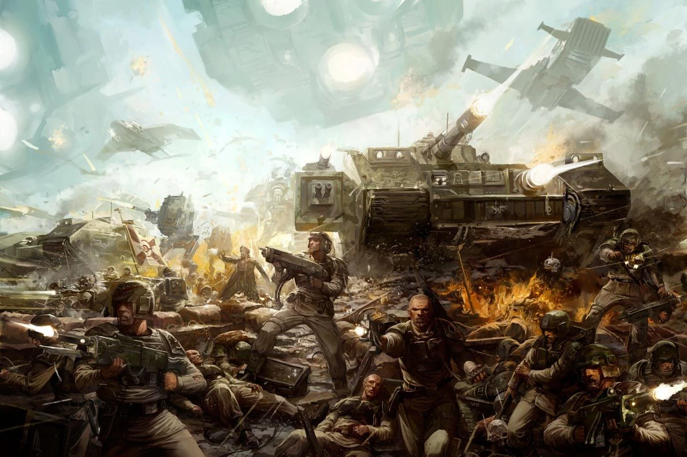
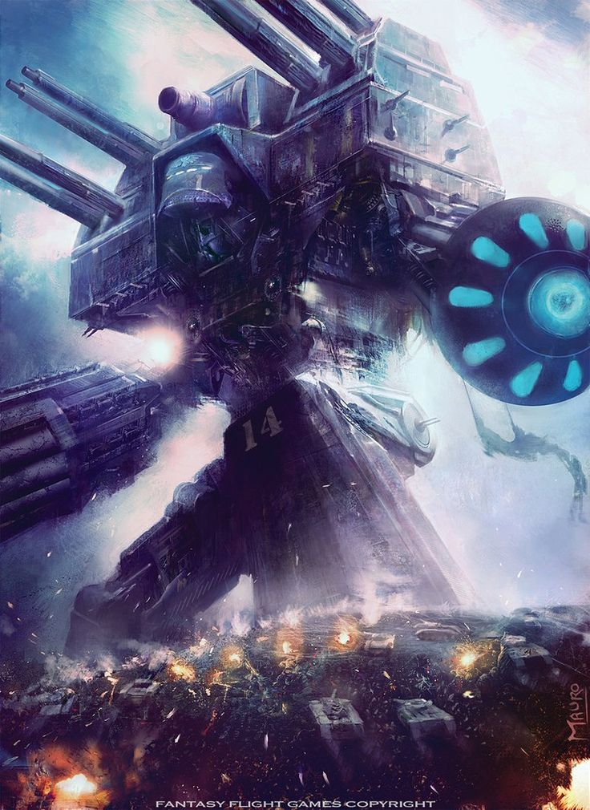
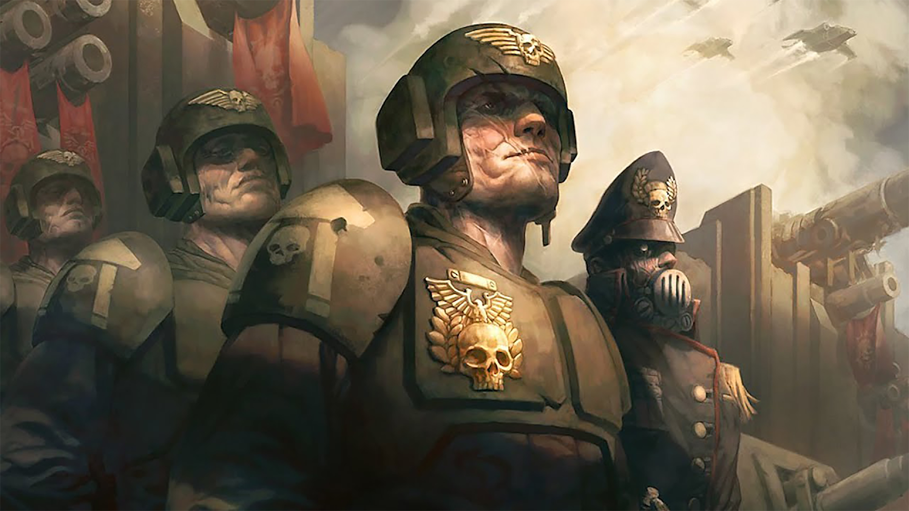

Враги человечества
С кем же доблестные защитники человечества сражаются изо дня в день?
Мутанты - порочные существа, лишь отдалённо похожие на человека. Уродливые и обезображенные, они заслуживают лишь одного - Его всеочищающего пламени

Предатели - люди, предавшие Империум. Их мотивы варьируются: кто-то хочет власти, кто-то жаждет злата, но объеденяет их одно - за предательство и неисполнение Lex Imperialis полагается лишь смерть.
Еретеки - люди, отвергувшие учение как Экклезиархии, так и самого Бога-Императора в частности, вставшие на ложный путь в силу низменных желаний. Помните, лучший еретик - мёртный еретик.
Ксеносы - бездушные мерзкие создания, ибо душу может даровать лишь Бог-Император. Помни рекрут - если ксенос предлагает мир - убей лжеца, ибо не может быть искренним тот, в ком нет частицы истинного Бога.
Профессии
Имперская гвардия предлагает огромное разнообразие профессий, доступным как новым рекрутам, так и бывалым гвардейцам. Ваша специализация зависит как от ваших способностей, так и от текущих потребностях фронта. Вы можете рассекать просторы на часовых, давить ксеносов на танках, покорять воздух на валькириях и конечно уничтожать противника в штыковых атаках. Подробно о текующих потребностях гвардии вы можете узнать в ближайщем пункте сбора.
Карьерный рост
За доблестную службу во имя Его предусмотрены различные преференции, в том числе продвижение по карьерной службе. Проявив свои способности и героизм каждый гвардеец способен подняться к вершине. И может быть именно ты станешь новым прославленным генералом, победоносно раздвигающим границы нашего Империума?

Передовое вооружение
Для победоностного противодействия внутренним и внешним угрозам Имперской Гвардии полагается передовое вооружение, включающее в себя такие чудеса Машинного-Бога как: Леман Русс множества модификаций, мощь 11 стволов и, конечно же, Божественные титаны Легио Титаника.
Преимущества новой жизни
Помимо самой возможности служить Императору на поле брани, служба так же включает в себя: бесплатное медецинское обслуживание, гарантированное трудоустройство, возможность посетить множество миров по всему Империуму, личное обмундирование и оружее, прощение грехов, совершенных до начала службы, и главное - полноценное трёхразовое питание.
Контактная информация
Для получения информации о нахожении ближайщего призывного пункта обратитесь к любому служащему Адептус Администратум и его подразделений или Адептус Министорум. Если же вы хотите узнать подробнее о Астра Милитарум, пройдите по ссылке снизу с помощью вашего когитатора.